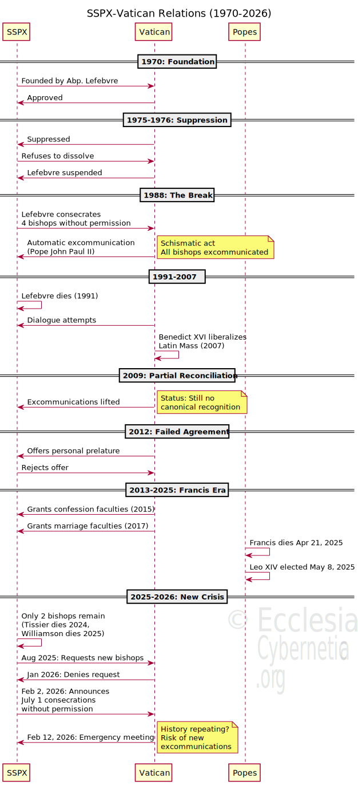

Understanding the Society of Saint Pius X and Its Ongoing Dispute with Rome
Last Updated: February 2026
What is the SSPX?
The Society of Saint Pius X (SSPX) is a traditionalist Catholic organization founded in 1970 by French Archbishop Marcel Lefebvre. The society exclusively celebrates the traditional Latin Mass and maintains theological disputes with certain teachings and reforms of the Second Vatican Council (1962-1965).
Timeline of Key Events
1970-1975: Foundation and Early Conflict
- 1970: Archbishop Lefebvre founds SSPX in Switzerland with initial Vatican approval
- 1975: Vatican suppresses the SSPX; Lefebvre refuses to dissolve it
- 1976: Lefebvre suspended a divinis (forbidden from priestly functions)
1988: The Schismatic Break
- June 30, 1988: Lefebvre consecrates four bishops without papal permission
- July 2, 1988: Pope John Paul II declares automatic excommunication for all five bishops
- The act is deemed schismatic under canon law
1991-2009: Separation and Dialogue
- 1991: Archbishop Lefebvre dies while excommunicated
- 2000: SSPX leads large pilgrimage to Rome for Jubilee Year
- 2007: Pope Benedict XVI liberalizes traditional Latin Mass (Summorum Pontificum)
- 2009: Benedict XVI lifts excommunications of four SSPX bishops
2012-2021: Failed Reconciliation
- 2012: Vatican offers canonical structure; SSPX rejects it
- 2015-2017: Pope Francis grants limited sacramental faculties
- 2021: Francis restricts Latin Mass again (Traditionis Custodes)
2024-2026: Current Crisis
- April 21, 2025: Pope Francis dies; Pope Leo XIV elected May 8, 2025
- 2024-2025: Two SSPX bishops die, leaving only two elderly bishops
- February 2, 2026: SSPX announces plan to consecrate new bishops July 1, 2026 without Vatican permission
- February 12, 2026: Emergency Vatican-SSPX meeting scheduled
Diagram: SSPX-Vatican Relations Timeline
Interactive Diagram: 56 Years of Conflict and Reconciliation Attempts The relationship between the Society of Saint Pius X (SSPX) and the Vatican has been one of the most complex and controversial issues in modern Catholicism. This timeline diagram illustrates the major events from the society’s founding in 1970 through the current crisis in February 2026.
Key Milestones Shown:
- 1970 - SSPX founded with Vatican approval
- 1975-1976 - Suppression and suspension of founder
- 1988 - Schismatic episcopal consecrations → excommunications
- 2009 - Benedict XVI lifts excommunications
- 2012 - Reconciliation talks fail
- 2015-2017 - Francis grants limited sacramental faculties
- 2025 - Pope Francis dies; Leo XIV elected
- 2026 - New consecration crisis looms
Why This Diagram Matters As the SSPX prepares to consecrate bishops on July 1, 2026 without Vatican permission—potentially triggering new excommunications—understanding the historical pattern is crucial. This visualization shows how history may be repeating itself, with the 2026 crisis mirroring the 1988 schismatic break.
Current Status: SSPX has ~700 priests and ~600,000 adherents worldwide, operates in “institutional irregularity,” and has only 2 elderly bishops remaining. The February 12, 2026 Vatican meeting could determine whether reconciliation is still possible.


- Author
-
© 2025 Ks. Tomasz Włodarczyk. All rights reserved.
-
Image @ Fr. Thomasz Włodarczyk all rights reserved.